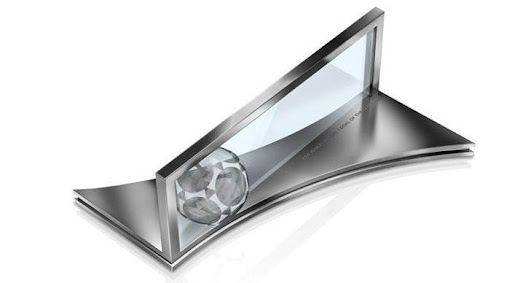

Karrier
| Év | Klub | Meccs | Gól |
|---|---|---|---|
| 2009-2013 | Santos | 225 | 136 |
| 2013-2017 | Barcelona | 186 | 105 |
| 2017-2023 | Paris Saint-Germain | 173 | 118 |
| 2023-2025 | Al-Hilal | 7 | 1 |
| 2025 | Santos | 9 | 3 |
| 2010-2023 | Brazil Válogatott | 128 | 79 |
| Összesen | 728 | 442 | |
Díjak, elismerések
Nemyar karrierje elején, 2011-ben megnyerte a Copa Libertadores-t a Santossal. Később a Barcelonával kétszer nyert La Liga-t, háromszor Copa del Rey-t és 2015-ben megnyerte a Bajnokok Ligáját és a Klub Világbajnokságot is. Párizsban a Ligue 1-t ötször nyerte meg a Coupe de France-t pedig háromszor. Az AL-Hilallal megnyerte a Saudi Pro League-t 2024-ben, a Brazil Válogatott-tal 2016-ban Olimpiát nyert. Egyéni elésmerései közé tartozik: a Puskás-Díjat 2011-ben megnyerte, 2015-ben és 2017-ben a FIFA világ legjobb 11 játékosa csapatban is benne volt, emelett 2015-ben és 2020-ban az UEFA Év Csapatában is szerepelt. 2015-ben a La Liga legjobb játékosává választották.